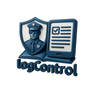

Acceso rápido
Abre LogControl desde tu escritorio y entra de forma más directa a tu entorno de trabajo.

LogControl
Instala LogControl en tu escritorio y accede desde una experiencia más clara, rápida y profesional.
LogControl
Abre LogControl desde tu escritorio y entra de forma más directa a tu entorno de trabajo.
Cuando el navegador lo permita, podrás instalar la app con un solo botón.
La experiencia se presenta desde LogControl para mantener una identidad más clara y consistente.
Uso recomendado
Utiliza LogControl como acceso principal desde tu computadora para mantener una experiencia más ordenada y práctica.